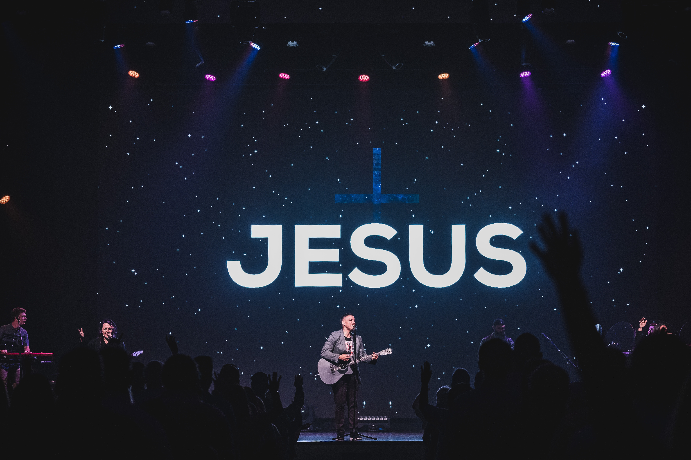

Giving my life to Christ
At some point in life we all realise that we need Jesus in our lives. It is a question of whether you say yes or no to Him, I said yes and my life was transformed. The truth is we are all made in God's image and there will always be a place in your heart that nothing or no one can fill except for the one who created you!
CONTINUE READING

July 23, 2019 | 3 comments